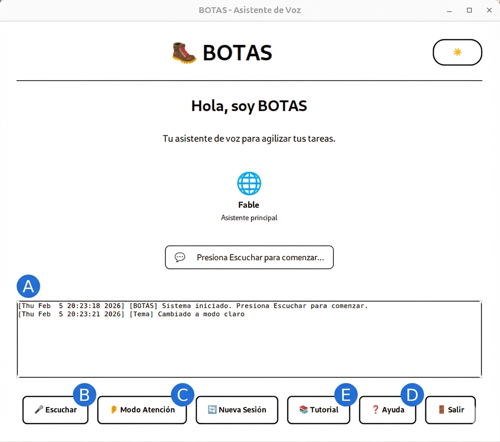
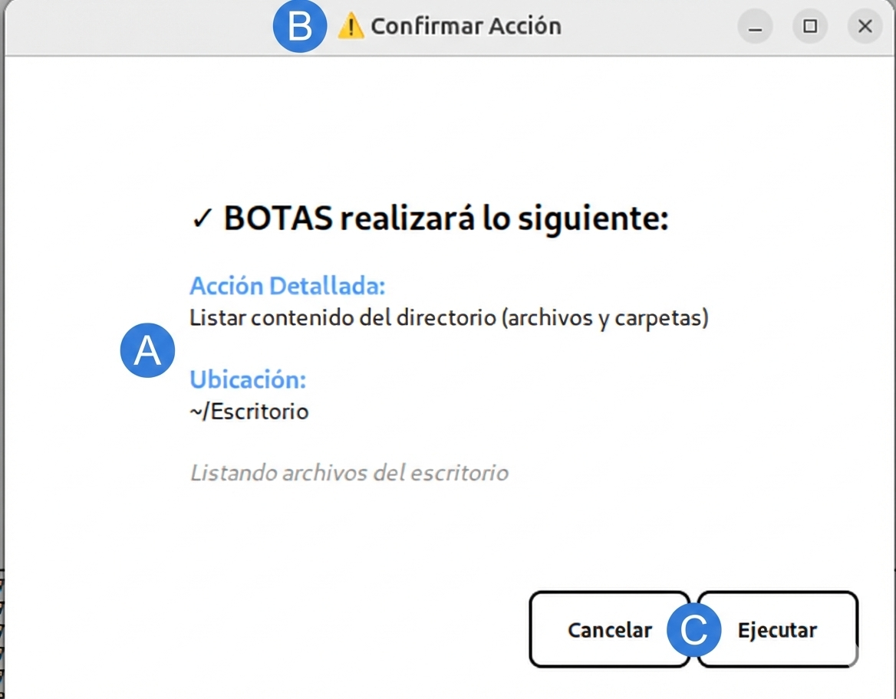

OpenAI (recomendado)
Mayor precisión (Whisper + GPT-4o).
- Entra a platform.openai.com/api-keys.
- Inicia sesión y pulsa «Create new secret key».
- Copia la clave (empieza con
sk-…) enconfig.json→"api_key".
Asistente de voz · GNU/Linux · enfoque HCAI
BOTAS (Bot de Operaciones y Tareas Automatizadas del Sistema) es un asistente de voz que actúa como middleware entre tú y la línea de comandos de GNU/Linux: tú dices lo que quieres hacer y BOTAS genera el comando, lo muestra, lo explica y lo ejecuta.

GNU/Linux mueve la nube, las supercomputadoras y los móviles del mundo, pero su puerta de entrada sigue siendo una línea de comandos de los años 70. BOTAS nace para cerrar esa brecha: hacer accesible ese poder sin pedirle al usuario que memorice sintaxis crípticas.
Para quien empieza en Linux, encontrar el comando correcto deja de ser un obstáculo. Para quien ya lo conoce, evita decenas de clics y permite delegar tareas por voz mientras hace otra cosa. No reemplaza la terminal: la vuelve conversacional.
Reconocimiento con OpenAI Whisper (en línea) o Vosk (sin conexión).
Traduce lenguaje natural a comandos con GPT-4o o un modelo local (DeepSeek / LM Studio).
Seis capas deterministas, independientes del modelo, que previenen operaciones destructivas.
Memoriza las tareas que resuelve el LLM y las reutiliza sin volver a consultarlo.
Se adapta a 6 familias de distros (Debian, Fedora, Arch, openSUSE, Alpine, Void).
Procesos, redes y puertos, búsquedas web, plantillas de proyecto y análisis de texto.
Muestra el comando antes de ejecutarlo y pide confirmación en operaciones delicadas.
Retroalimentación por voz con OpenAI TTS o eSpeak (offline).
BOTAS se diseñó bajo el paradigma de Inteligencia Artificial Centrada en el Humano (HCAI): la IA propone y el humano decide. Transparencia, control humano, seguridad y empoderamiento guían cada decisión.
[EDITAR: bio breve — 2 a 4 frases. Ej.: «Soy José Ramón Aragón Toledo, estudiante de Ingeniería en Computación en la Universidad Tecnológica de la Mixteca (UTM)…».]
[EDITAR: 1 párrafo — el origen durante el servicio social en la UTM, la motivación de accesibilidad de GNU/Linux y el interés por la IA Centrada en el Humano (HCAI). Cómo evolucionó de un MVP a la versión actual y su relación con el trabajo de tesis.]
BOTAS se desarrolla en la Universidad Tecnológica de la Mixteca (Huajuapan de León, Oaxaca), bajo la dirección del M.C. Ricardo Ruiz Rodríguez, y se presenta como artículo corto en CLIHC 2026.
(Estos elementos son placeholders: edítalos en website/index.html,
sección #proyecto.)

BOTAS corre en GNU/Linux. El instalador detecta tu distribución automáticamente.
git clone https://github.com/huesomx/B.O.T.A.S.git
cd B.O.T.A.S(El repositorio se hará público próximamente — ver la pestaña «Descarga y contacto».)
sudo ./install.shInstala Perl y sus módulos, SoX (audio), eSpeak (voz) y demás requisitos. Compatible con Debian/Ubuntu, Fedora/RHEL, Arch/Manjaro, openSUSE, Alpine y Void.
cp config/config.json.example config/config.json
# edita config/config.json y coloca tu API keyO usa el modo local sin clave (ver abajo).
perl bin/botas.plSe abre la ventana. Pulsa «Escuchar» o di la palabra de activación «Botas» y habla tu comando.
Mayor precisión (Whisper + GPT-4o).
sk-…) en config.json → "api_key".Compatible con la API de OpenAI, suele ser más económica.
config.json y selecciona el proveedor DeepSeek.100 % privado y gratis, sin internet.
Liberación pública del repositorio
Disponible el 15 de agosto de 2026.
Descargar (próximamente)El enlace se habilitará automáticamente cuando termine la cuenta regresiva.
¿Tienes comentarios, dudas o quieres una demo privada? Escríbeme: leo todo lo que llega por aquí.